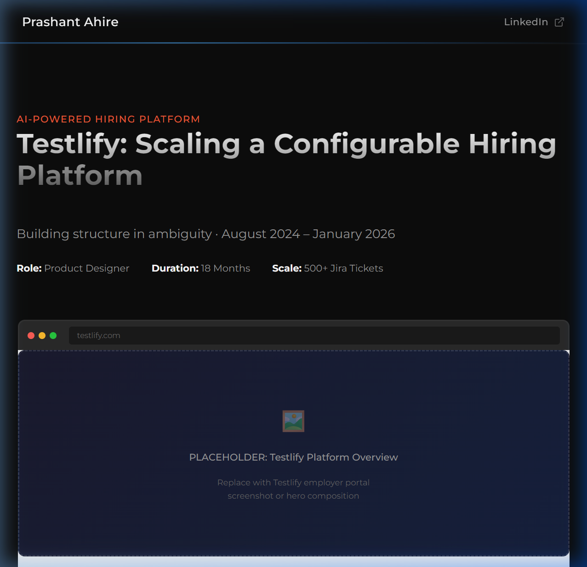
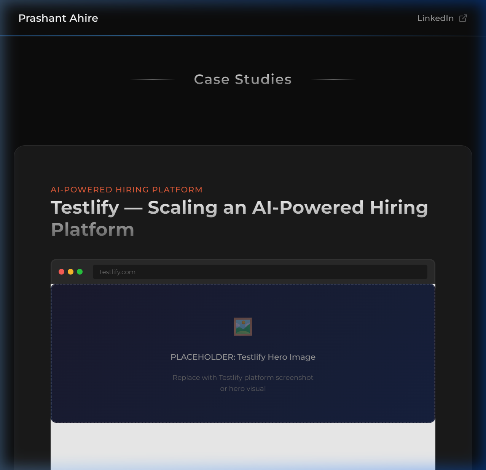

Testlify: Scaling a Configurable Hiring Platform
Building structure in ambiguity · August 2024 – January 2026

At a Glance
The Real Problem
Hiring software operates in a high-stakes environment. Design mistakes can lead to:
When I joined Testlify, the platform had strong functional depth but growing complexity:
The challenge wasn't adding more features. It was preventing the system from collapsing under its own complexity.
Every configuration decision cascaded across multiple surfaces. One employer toggle could affect:
The core design question became: How do we preserve flexibility without introducing confusion, risk, or unintended consequences?
How I Worked
| Daily Reality | How I Responded |
|---|---|
| Founder provided high-level references | Mapped business intent → structured product logic — converting vague asks into clear, actionable requirements with documented flows and edge cases |
| No detailed PRDs or structured documentation | Structured undefined requirements — architected TUX tickets (design proposals), secured approval, moved to TF tickets (development) |
| Requirements from sales, CS, client requests | Surfaced edge cases before development — modelling failure states, data conditions, and system interactions before engineering began |
| Vague or half-baked requirements | Validated feasibility with engineering — aligned on technical constraints, development timeline, and implementation approach |
| Revenue-driven prioritisation | Enforced quality standards via UAT — tested across Preview → Staging → Release → Production; blocked releases when specs weren't met |
| No senior UX reviewer | Directed 2–3 junior designers — reviewed complex flows before dev handoff, maintained system-wide consistency |
I wasn't just designing screens. I was structuring what the product should do when no one else had defined it.
Design Principles
Five core principles governed my decisions across 18 months:
Control Over Automation
AI and automation should assist decisions, not replace them. Every automated action required a manual override option, a pause capability, and clear transparency into what the system was doing.
Transparency in Complexity
When systems are complex, surface that complexity visibly — don't hide it. Sync states, threshold logic, criteria scoring, and configuration impact should all be legible.
Progressive Disclosure
Don't overwhelm users with all options at once. Reveal configuration depth step-by-step based on user journey and technical comfort level.
Guardrails, Not Gates
Enable power users while protecting novice users. Confirmation modals, default limits, and clear warnings — but never block capabilities entirely.
Consistency Across Chaos
As features expanded rapidly, enforce consistent patterns across every surface: status indicators, action buttons, empty states, error handling, sync visibility.
Major Contribution: AI Resume Parser
| The Ask | A client requested automated resume screening integrated with their ATS workflow. The founder wanted it architected as a scalable feature for all Testlify customers — not a one-off solution. |
| The Risk | Over-automation could silently reject qualified candidates. Incorrect threshold configuration, unclear criteria selection, or aggressive automation without transparency could cause hiring mistakes, damage client trust, and create legal liability. |
The 6-Stage Flow I Architected
ATS Integration Gate
Enforced prerequisite: Greenhouse ATS must be connected before accessing Resume Parser. Engineered contextual empty states for every condition: ATS not connected / ATS connected but no jobs / Jobs exist but no candidates / Job not configured for parsing.
Job Selection & Stage Mapping
System surfaces ATS jobs in 'Not Setup' state by default. Employer selects which ATS stage to pull candidates from + optional job description upload.
AI Criteria Suggestion
AI generates 10 evaluation criteria based on role name and job description. Employer must select minimum 8 — or build completely custom criteria from scratch.
Score Threshold Configuration
Employer defines three scoring bands: High / Medium / Low. Configures automation rules per band — above X score moves candidate to next ATS stage; below Y score triggers auto-reject.
Parsing Controls
Default processing cap: 20 candidates per batch. Pause-resume capability during active screening. Sync-state visibility: Never synced / Failed / Synced X minutes ago. Manual re-sync as fallback.
Candidate Evaluation Interface
High/Medium/Low badges per candidate. Criteria-level scoring breakdown. On candidate detail: resume preview, basic info, and manual controls — reject candidate / move to next ATS stage / invite to assessment.

Key Design Decisions With Reasoning
| Decision | Reasoning & Trade-off |
|---|---|
| Mandatory Confirmation Before Rejection | What: Engineered an explicit
confirmation popup before any automated rejection activates. Why: Rejection is irreversible and affects real people's careers. Every bulk rejection must require a conscious, deliberate action. Trade-off: Adds friction — but prevents accidental mass rejection. |
| Pause Capability | What: Built pause-resume controls
directly into the active parsing flow. Why: If an employer discovers an incorrect threshold after screening starts, they need an immediate stop mechanism. Trade-off: Added UI complexity — but it's a critical safety valve. |
| Sync Transparency | What: Made ATS sync state highly
visible with a manual re-sync fallback always accessible. Why: External ATS dependency creates unpredictable failure states. Users need to see when the system isn't working. Trade-off: Exposes technical complexity — but builds durable trust. |
| Default Candidate Limit | What: Set the default processing
cap at 20 candidates per batch. Why: Prevents first-time user overwhelm and reduces bulk processing errors. Trade-off: Power users adjust manually — but the safe default protects against the more costly error. |
Fast automation feels impressive in demos. Responsible automation builds long-term client trust. I built for reliability over speed.
Impact
Other Key Contributions
Decision Visibility Across Libraries
Employers had access to 3,000+ tests, 182,000+ questions, 100+ templates, and 100+ interview kits — with no quick way to identify which assets were proven or popular. Selection was guesswork.
What I Did: Added 'Candidates Assessed' count directly onto listing cards and detail pages — applied consistently across all library types. Small UI addition. Large behavioural impact.
Reporting as a Product
Reports were treated as exports. But they're consumed by HR teams, leadership, and candidates — shared externally. Poor reports directly damage product perception and client trust.
| Redesigned Core Reports | Overhauled assessment-level and test-level reports — elevated visual hierarchy, score presentation logic, and data readability for non-technical HR users. |
| 8 Psychometric PDF Reports | Big Five · 16 Personality Types · Enneagram · Leadership Style · Sales Profiler · Leadership Potential · 360 Degree Feedback · PicOcean |
| Restructured Export Architecture | Organised into: Single assessment report · Library-only report · Merged PDF · ZIP download |
Employer Portal Structural Improvements
| Area | What I Did |
|---|---|
| Billing Page | Modular card system — View plans / View usage / View invoices / Subscription duration / Add-on usage / Credit consumption |
| Email Configuration | Tab-based organisation — Default (Testlify servers) / Domain-based (DNS verification) / SMTP-based (Custom server) |
| SAML SSO Flow | Engineered complete enterprise Single Sign-On configuration inside Settings — critical enterprise-readiness requirement |
| Navigation Density | Surfaced platform scale in navigation: Tests 3,000+ · Questions 182,000+ · Templates 100+ · Interviews 100+ |
| Referral System | Orchestrated 'Refer & Earn $500' feature + dedicated landing page — organic acquisition channel |
Marketing Website Contributions
| Area | What I Did |
|---|---|
| AI Capability Positioning | Made the AI assistance vs. automation distinction explicit, avoided 'AI will do everything' messaging |
| Feature Communication | Elevated information hierarchy for complex features — assessment creation, proctoring, ATS integration, psychometric types |
| Enterprise Trust Signals | Integrated compliance messaging — SOC 2 Type II, GDPR, ISO 27001, CCPA |
| Product-Marketing Alignment | Reviewed feature descriptions against actual workflows. Flagged misalignments. Prevented overselling. |
Cross-Platform Considerations
| Coverage | Detail |
|---|---|
| Platforms Validated | Employer Portal: Desktop web · Candidate Experience: Web + Android + iOS · Browsers: Chrome, Safari, Edge, Firefox · OS: Windows, macOS, iOS, Android |
| Validation Process | Desktop responsiveness · Tablet layouts · Mobile web compatibility · Android app consistency · iOS app parity · Browser rendering differences · OS-level inconsistencies |
A concrete cascade example:
Employer enables video question in assessment↓ Affects mobile camera permissions (Android/iOS)
↓ Affects browser permission handling (Safari blocks differently than Chrome)
↓ Affects performance on older devices
↓ Affects instruction clarity about technical requirements for candidates
Design decisions weren't screen-based. They were behaviour-based across touchpoints.
The Messy Reality — What Made This Hard
This wasn't clean product work. It was structured chaos.
| Challenge | Reality & How I Navigated It |
|---|---|
| No Structured UX Validation Layer | No senior UX reviewer or structured design critique process. Solution: Leveraged AI tools to stress-test logic, simulate edge cases, and surface potential interaction loops. |
| Revenue-Driven Prioritisation | Client-requested features took priority over UX refinement. Approach: Documented design debt explicitly. Balanced urgency against minimum viable quality. |
| Cross-Browser Inconsistencies | Chrome on Windows ≠ Safari on macOS. Process: Enforced cross-environment validation for every feature before user release. |
| Constant Context Switching | Simultaneously owned: employer portal, candidate experience, marketing website, PDF reports, configuration settings, white-label environments. |
| Supporting Junior Designers | Reviewed work before every dev handoff. Elevated quality bar. Reduced team-level rework. |
Parallel Projects — Quality Under Volume
Metanotes AI Notetaker
UI Designer (Solo) · Marketing WebsiteBuilt marketing website foundation from scratch for an AI notetaker product. Researched competitors (Otter.ai, Fireflies), produced homepage, features, and pricing pages.
DYMON Storage & Moving
UI Designer · Client WebsiteProduced new pages using existing styling and component library. Maintained brand consistency within a pre-defined design system.
Appforest Time Tracking
UI Designer · Jira Marketplace AppProduced time tracking tool UI inside the Jira ecosystem. Referenced Tempo, matched Jira design system requirements.
4 simultaneous products. 500+ Jira tickets. 18 months. No regression.
What I Actually Delivered
| Category | Delivered |
|---|---|
| Feature Leadership | AI Resume Parser (ATS integration) · 8 Psychometric PDF Reports · SAML SSO Configuration · Billing Page Restructure · Email Configuration System · Referral Programme + Landing Page · Library Visibility Improvements · Report Architecture Redesign · Marketing Website Contributions |
| System-Level Work | 500+ Jira tickets · Cross-module consistency enforcement · White-label/reseller UX considerations · Multi-device validation protocols · Logic gap identification before development · Cross-browser compatibility · UAT across 4 environments |
| Team Impact | Directed 2–3 junior designers · Enforced system-wide design quality standards · Elevated team output through upfront validation · Reduced post-handoff rework |
Key Outcomes
What This Shows About How I Work
| Capability | How It Showed Up |
|---|---|
| I Map Ambiguity | Most features started as vague founder direction. I surfaced what they should actually do — structuring logic, identifying edge cases, translating business intent into product behaviour. |
| I Think in Systems | Every design decision was evaluated for downstream impact. Screens are the output — systems are the work. |
| I Balance Speed & Safety | Client urgency is real. Revenue impact matters. But product risk is equally real. I navigated both. |
| I Anticipate Problems | Proactively surfaced logic gaps, edge cases, and potential failure states before they reached production. |
| I Elevate Team Output | Directing junior designers, maintaining consistency, preventing regression, strengthening the overall quality bar. |
Reflection
Testlify wasn't a 'design this feature' project.
It was: Build structure in a rapidly evolving, configuration-heavy platform where requirements are unclear, timelines are tight, and mistakes have real business consequences.
I evolved across these 18 months:
The platform served real hiring teams making real decisions about real people's careers. Every design choice carried weight.
I'm proud of building scalable structure in genuine operational complexity.